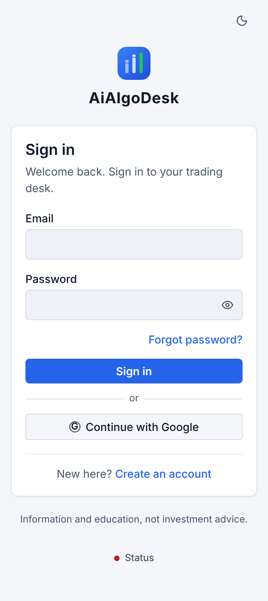
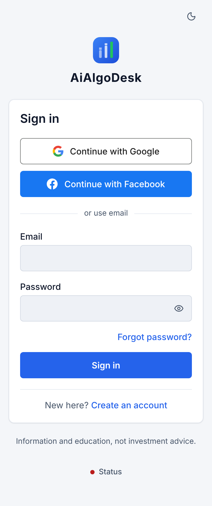
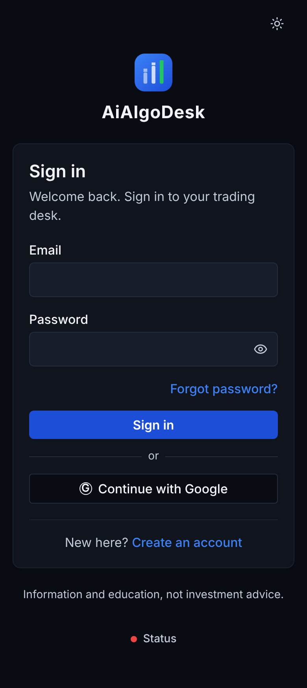
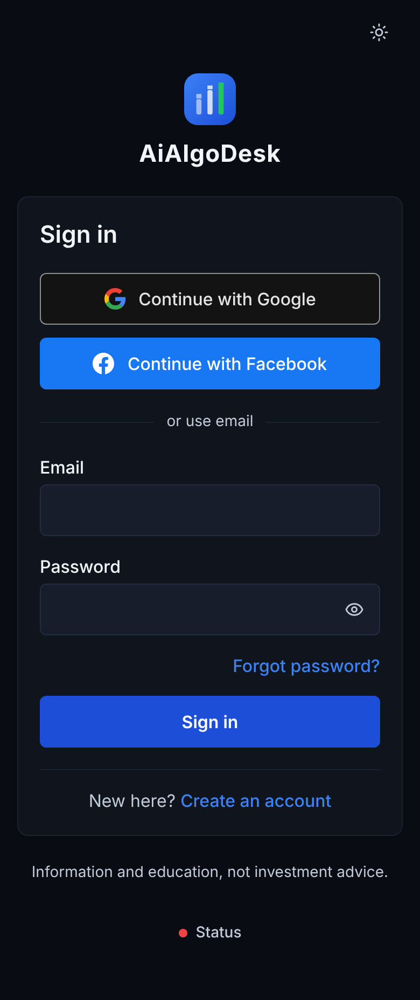
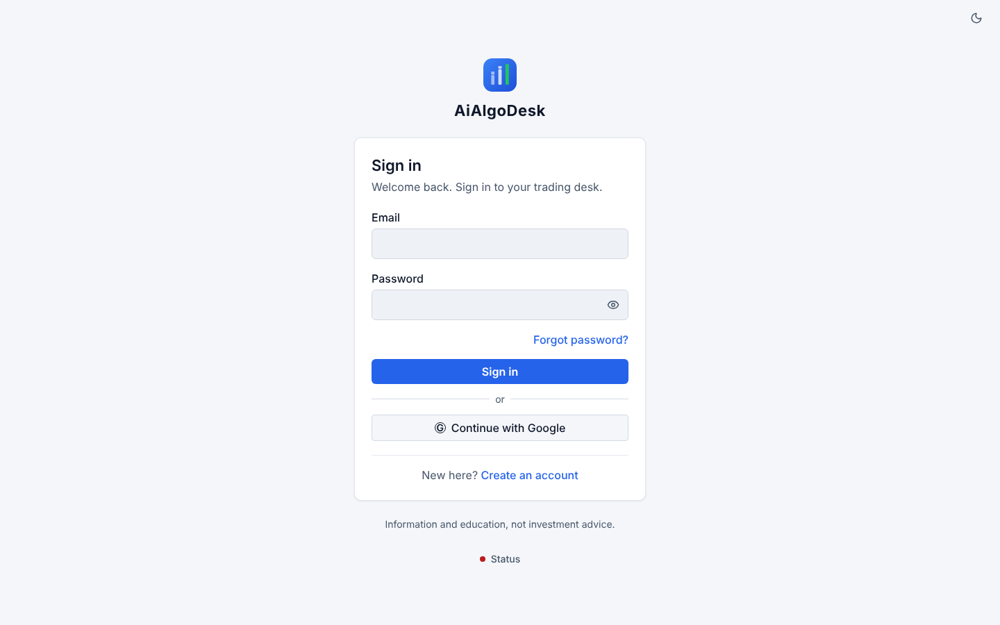
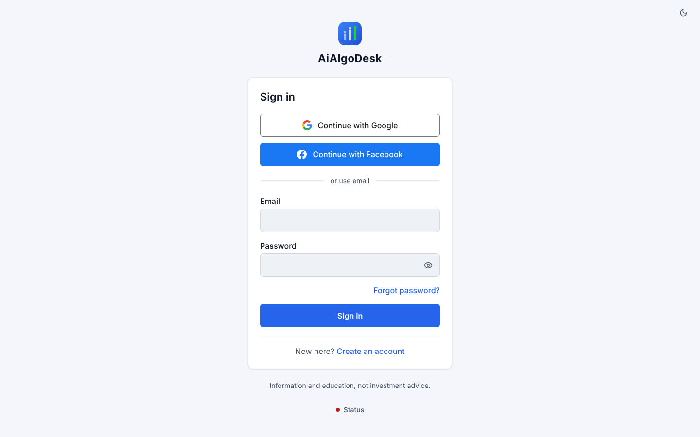
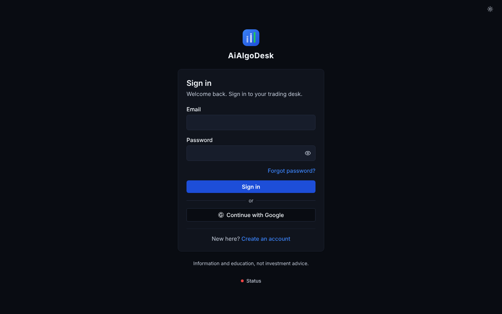
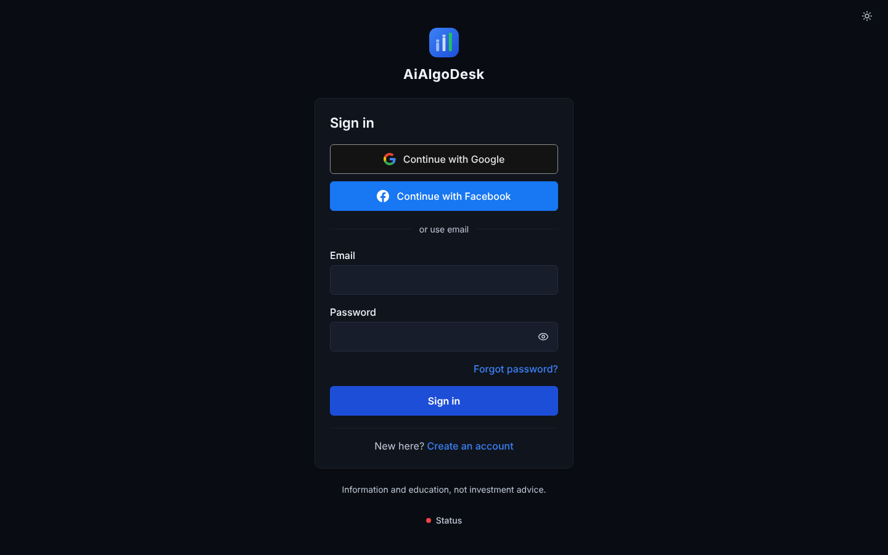

Before = origin/main (GS-1, Google configured). After = this PR with ui_v2 on, Google and Facebook configured. Every API answer is mocked; no real account.
Provider buttons at the top, brand-correct ("Continue with Google" / "Continue with Facebook", official marks), then "or use email".
48 px buttons and inputs; no intro paragraph on Sign in / Create account; "Forgot password?" stays visible.
New: the link step (an account uses this email - its password and code confirm the link).
Phone 390 - Sign in
Before, light

After, light

Before, dark

After, dark

Desktop 1440 - Sign in
Before, light

After, light

Before, dark

After, dark

After only - Create account and the link step (phone)